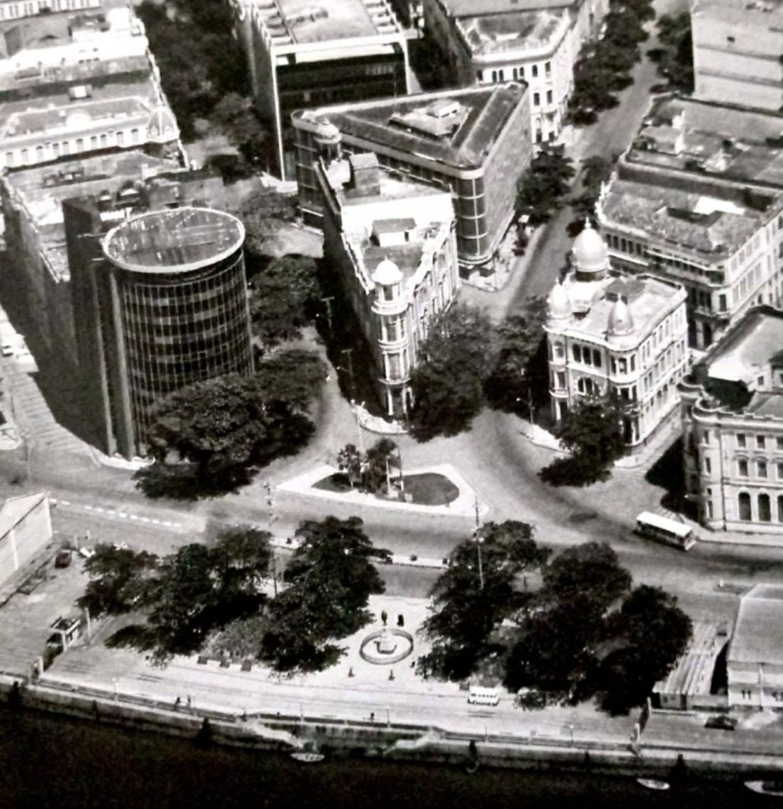
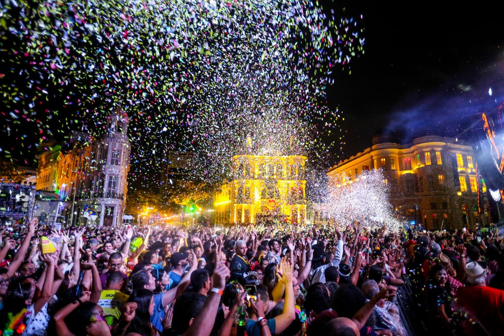
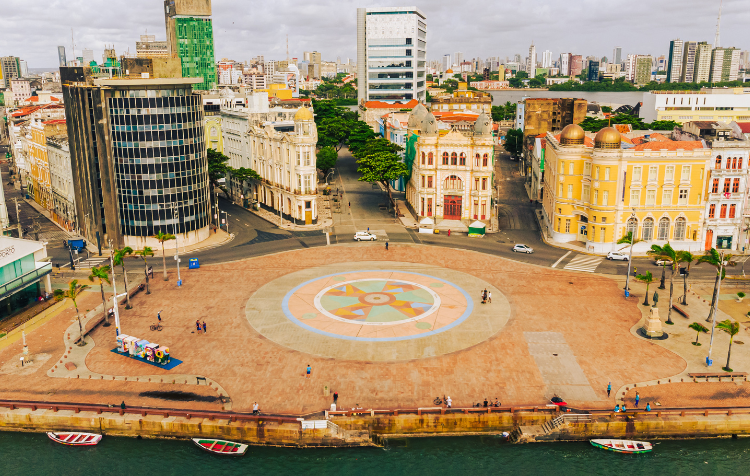

Marco Zero é o ponto central da cidade do Recife, onde a cidade foi oficialmente fundada.
Além de ser um marco histórico, o local também é conhecido pelas suas atrações culturais e artísticas.
O Marco Zero está localizado no bairro do Recife Antigo, sendo um dos principais pontos turísticos da cidade.
